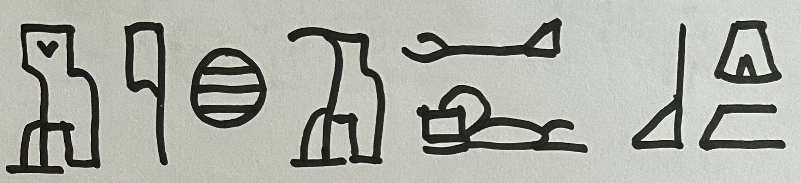

ARO Simulations
Averaging Position-Switched Data
Frequency-Switched Data 'Fold' Operation
12-meter Rocker Stops
ARO Video Demos
ARO Observing with Windows
Uptimes
otf2class
LinuxPops OTF
Frequency Switching Overview
Frequency-Switched Data Reduction
Gess
Official Rules
Gess
Classic laptop version (keyboard & mouse req'd)
iGess
Touch-only: fully featured
miGess
Touch-only: minimalist
The Mandelbrot Set
What is it?
MandelZoom
Click or tap on the image to zoom x 10
Birthday Cake
Create a Birthday Cake
Other Khan Academy Projects...
Protein, Starch & Veg
The KA "What's for dinner?" project
Jumping Spider
The KA "Animal attack" project
Sea Birds
The KA "Mountain Range" project
MyKrobes
The KA "Computational creatures" project
Star Image
Star image forms as Gaussian distribution of photons
Rocket Lander
Still buggy but playable (keyboard req'd)
Drawings
Gallery
Music